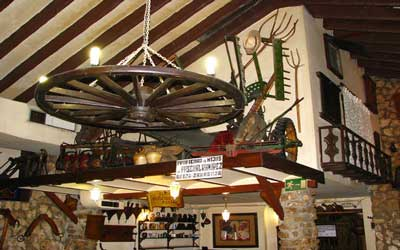

Restaurantes
Home
Itinerario
Eventos
Restaurantes
Formulario
Te presentamos los mejores restaurantes de Almagro
Restaurante Doña
Restaurante guarda la vieja
Restaurante la parrillita
Restaurante rincon norte
Restaurante curcuma cocina

Restaurante el fuelle
Restaurante lucuma
Restaurante el gorrion negro